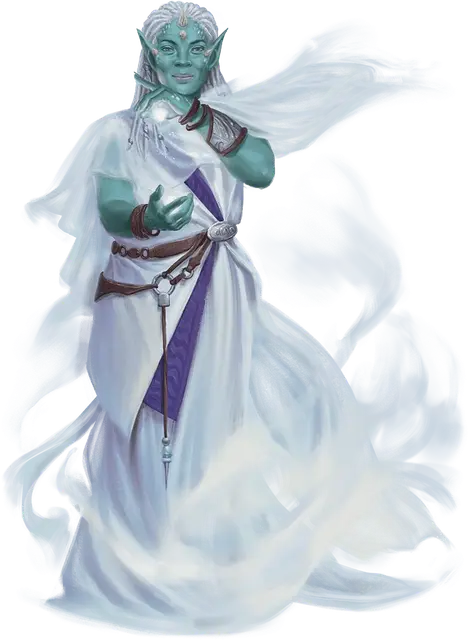

Хранитель завесы Ирд
Irda Veil Keeper
Средний Великан (Чародей), любое мировоззрение

Класс Доспеха 13
Хиты 49 (9к8 + 9)
Скорость 30 футов
| мод | спас | ||
|---|---|---|---|
| СИЛ | 9 | −1 | −1 |
| ЛОВ | 16 | +3 | +3 |
| ТЕЛ | 13 | +1 | +1 |
| мод | спас | ||
|---|---|---|---|
| ИНТ | 14 | +2 | +4 |
| МДР | 17 | +3 | +5 |
| ХАР | 19 | +4 | +6 |
Навыки Восприятие +7, Магия +4, Проницательность +7
Иммунитет к состояниям испуг, очарование
Чувства истинное зрение 5 футов, тёмное зрение 60 футов, пассивное Восприятие 17
Языки Общий, Великаний, Сильван
Опасность 4 (1100 опыта)
Бонус мастерства +2
Действия
Мультиатака. Хранитель завесы использует увеличение физической силы, если оно доступно, и совершает две атаки призрачной вспышкой.
Призрачная вспышка. Рукопашная или дальнобойная атака заклинанием: +6 к попаданию, досягаемость 5 фт. или дальность 60 фт., одна цель. Попадание: 11 (2к6 + 4) урона излучением, и цель должна преуспеть в спасброске Мудрости Сл 14, иначе она будет очарована хранителем завесы до начала следующего хода хранителя завесы. Будучи очарованным таким образом, существо становится недееспособным, поскольку его окружают гипнотические иллюзорные видения.
Увеличение физической силы (1/день). На 1 минуту хранитель магическим образом усиливает свои физические способности и увеличивается в размерах вместе со всем, что он носит или несёт. Во время увеличения хранитель становится Большим и совершает спасброски Силы и Ловкости с преимуществом. Если хранителю не хватает места, чтобы стать Большим, он достигает максимально возможного размера в доступном пространстве. Увеличение заканчивается если хранитель становится недееспособным.
Изменение формы (3/день). Хранитель волшебным образом трансформируется, чтобы выглядеть и чувствовать себя как Средний Гуманоид, которого он видел. Любое снаряжение, которое хранитель носит или несёт, не трансформируется, и характеристики хранителя не меняются. Хранитель возвращается в свою истинную форму, если хиты искателя опускаются до 0 или если хранитель использует действие, чтобы закончить трансформацию.
Использование заклинаний. Хранитель завесы накладывает одно из следующих заклинаний, не требующих материальных компонентов и использующих Харизму в качестве заклинательной характеристики (Сл спасброска от заклинания 14):
• Неограниченно: пляшущие огоньки [dancing lights], малая иллюзия [minor illusion]
• 2/день каждое: невидимость [invisibility], размытый образ [blur], воображаемая сила [phantasmal force]
• 1/день: мираж [hallucinatory terrain] (как действие)
Реакции
Скрывающий туман. Если существо, которое хранитель может видеть в пределах 30 футов от себя, становится целью атаки, хранитель завесы окружает его иллюзорным туманом, предоставляя существу укрытие на половину до начала следующего хода хранителя.
Описание
Ирды. Королева драконов создала ирд давным-давно. Хотя большинство ирд приняли учение своей злобной создательницы, некоторые из них приняли философию других божеств. Те ирды, которые не служат Королеве Драконов, живут в скрытых общинах по всему Кринну, избегая глаз своей создательницы и ее приспешников.
Далекие родственники они [oni], огров [ogre] и других великанов, ирды имеют мерцающую кожу, которая бывает оттенков индиго и морской зелени. Их врожденная магия дает им ограниченные способности к изменению формы и способность создавать иллюзии.
Владея врожденной иллюзорной силой, хранители завесы ирды защищают своих товарищей, создавая магические миражи, которые дезориентируют врагов. По слухам, самые искусные хранители завесы ирды могут укрывать целые анклавы, веками охраняя жителей общины от внешнего мира.